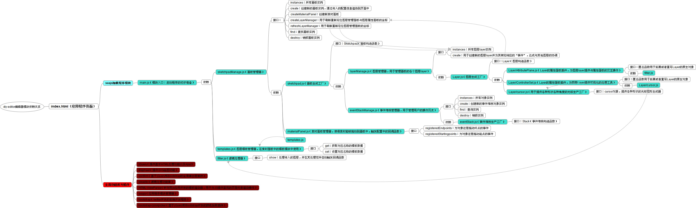

diy-editor编辑器模块依赖关系

diy-editor编辑器模块依赖关系
index.html（应用程序页面）
seajs加载程序模块
main.js（模块入口：启动程序的初步准备）
依赖
sketchpadManage.js（画板管理器）
接口：
instances：所有画板实例
create：创建新的画板实例，通过传入的配置信息渲染到页面中
createMaterialPanel：创建新素材面板
createLayerManager：用于刷新重新定位图层管理面板与图层属性面板的坐标
refreshLayerManager：用于刷新重新定位图层管理面板的坐标
find：查找画板实例
destroy：销毁画板实例
依赖
sketchpad.js（画板生成工厂）
接口：Sketchpad（画板构造函数）
依赖
layerManage.js（图层管理器，用于管理画板的各个图层layer）
接口
instances：所有图层layer实例
create：用于创建新的图层layer并为其绑定相应的“事件”，达成与其他图层的协调
依赖
Layer.js（图层生成工厂）
接口：Layer（图层构造函数）
依赖
Layer/AttributePlane.js（Layer的属性面板插件，为图层layer提供与属性面板的交互操作）
接口：匿名函数用于拓展或者重写Layer的原生对象
依赖
filter.js
Layer/ControllerSet.js（Layer的属性面板插件，为图层Layer提供可视化的处理工具）
接口：匿名函数用于拓展或者重写Layer的原生对象
依赖
Layer/cursor.js
Layer/cursor.js（用于提供各种形状各种角度的光标生产工厂）
接口：cursor对象，提供各种形状的光标图形生成器
eventStackManage.js（事件堆栈管理器，用于管理用户的操作历史）
接口
instances：所有对象实例
create：创建新的事件堆栈对象实例
find：查询实例
destroy：销毁实例
依赖
eventStack.js（事件堆栈生产工厂）
接口：Stack（事件堆栈构造函数）
materialPanel.js（素材面板管理器，使得素材能够拖动到画板中，触发配置中的回调函数）
接口
registeredEndpoints：为对象注册拖动终点的事件
registeredStartingpoints：为对象注册拖动起点的事件
templates.js
templates.js（图层模板管理器，在素材面板中的模板模块中使用）
接口
get：获取对应名称的模板数据
set：设置对应名称的模板数据
filter.js（滤镜处理器）
接口
show：处理传入的图层，并在其处理完毕自动触发回调函数
全局功能库与插件
jQuery（提供基本HTML处理功能以及Ajax）
Raphael（提供SVG绘图功能）
confirm（基于jQuery和Bootstrap的全局弹出层插件）
pixastic（滤镜处理功能库）
HTML-ViewParse（针对而js应用开发的模板渲染器，用于为JS提供直观的页面元素渲染操作）
seajs（应用程序模块管理器）
bootstrap（twitter开发的前端开发框架）
bootstrap-colorpicker（基于jQuery和Bootstrap开发的颜色拾取插件）